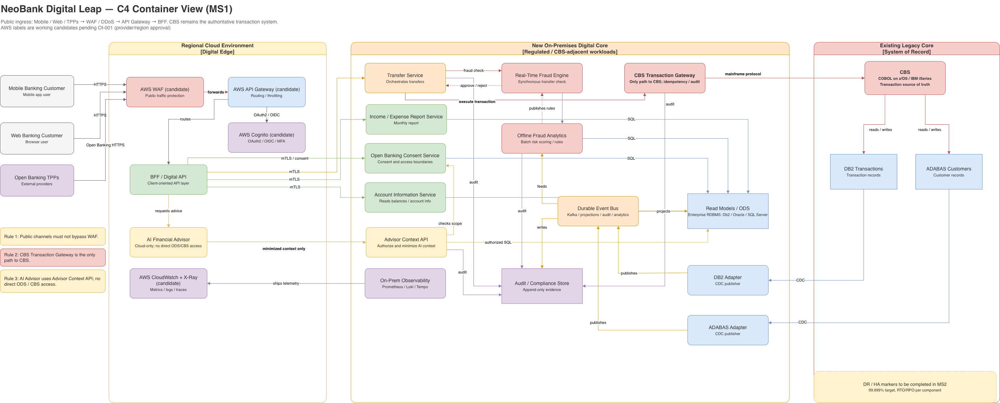
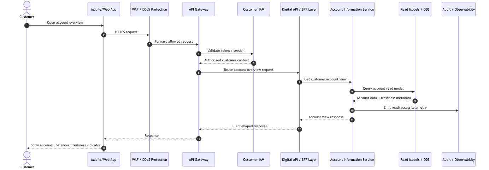
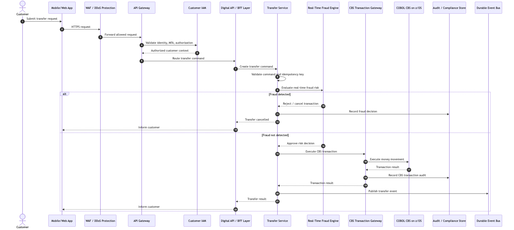
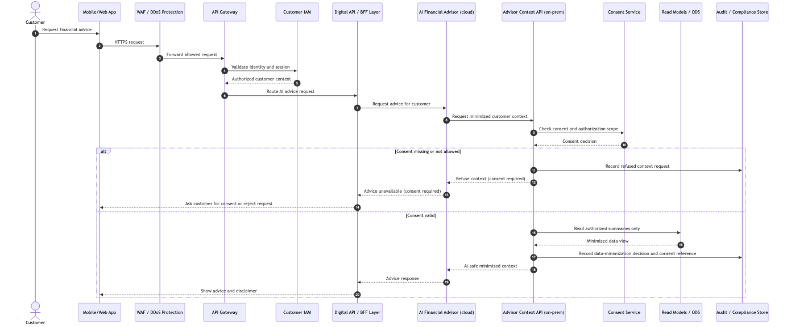

NeoBank Digital Leap
Software Architecture — MS1 Preliminary Solution
Replace with your name, date, and course tag.
The constraint that shaped everything
The mainframe's contract is small: it's an authoritative ledger, not a feature platform. That's what makes wrapping possible.
Replace (ruled out)
- 1 year deadline: impossible
- 5 nines: would reset to lower
- 5 COBOL developers: tiny capacity
- Regulator: mainframe is the audit record
Strangler Fig (chosen)
- CBS stays; we add around it
- COBOL team owns the contract
- Java + AWS team builds the wrapper
- One decision cascades into everything else
Once you stop trying to replace the mainframe, CQRS, the event bus, the ODS, and the CBS Transaction Gateway all follow.
If reads went to the mainframe, the MVP doesn't launch. The mainframe is a payment-per-operation machine — every read costs the bank money.
The ODS is not a second system of record. It's a projection. The 24h staleness tolerance (NFR-PC-060) is the only honest trade-off — and it's enough headroom to scale to a million users.
The hard question isn't "what can the model do?" — it's "what does it have the right to see?"
Naive (ruled out)
AI Advisor → ODS directly.
The model sees the full customer record. It doesn't need most of it. The customer never authorized most of it.
D-008: Advisor Context boundary
AI Advisor → Advisor Context API → Consent + authorized projection.
The API authorizes and minimizes. The AI only sees what it needs to render advice. Every request is audited.
This isn't a feature. It's a boundary. And once we drew it, the architecture got simpler — not harder.
The C4
Three boundaries · three rules · one mainframe · one source of truth.

Source: docs/diagrams/01-high-level-solution.mmd (horizontal walk) · Full C4: docs/diagrams/neobank-digital-leap-c4.drawio · Mermaid C4 mirror: docs/diagrams/07-c4-container.mmd
Three flows, three insights



What we'd revisit
Honest trade-offs, not apologies. Every architectural choice has a rough edge; here's ours.
| Risk | What it is | What we'd do with more time |
|---|---|---|
| 24h staleness | Customers may see outdated balances for external transactions (NFR-PC-060). | Add a "live refresh on transfer" pattern in MVP+1: any transfer that touches a balance triggers a synchronous read. |
| 5 COBOL developers | Single point of capacity for any CBS change. Also a feature: 5 deep experts on the system that processes 99.999% of the money. | Pair-program the Java team with the COBOL team on the gateway contract. Document runbooks so the gateway is operable beyond 5 people. |
| No DR topology yet | The C4 marks ‖ HA pairs on the CBS Gateway, the event bus, and the ODS — but those are aspirational. The full network topology and DR runbook is not yet designed. | Full network topology + DR runbook in MS2 (scaffold ready in docs/diagrams/06-network-topology.mmd). |
| ODS vendor not picked | Oracle / SQL Server / Db2 shortlist (ADR-002). All viable; the architecture works for any of the three. | MS2 decision. This is a procurement call, not a design call. |
What's open
Three biggest open questions
- ODS vendor — Oracle, SQL Server, or Db2? (MS2)
- Cloud region for the AI Advisor — regulatory approval pending.
- RTO / RPO per component — required by NFR-AR-020, MS2 deliverable.
Thank you.
Questions are welcome — the architecture crystallizes once you stress it.
Rule 2: The CBS Transaction Gateway is the only path to the mainframe.
Rule 3: The AI Advisor reads through a minimized context boundary.